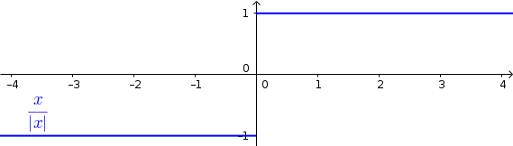
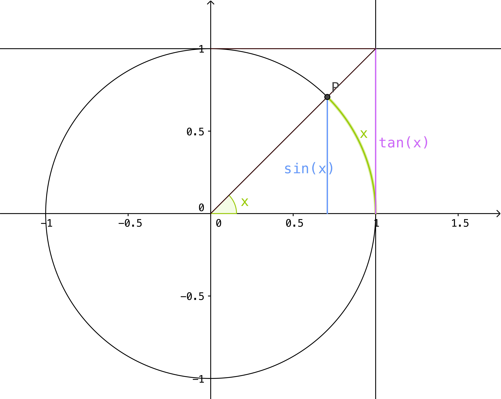

2. Markgildi og samfelldni
Nauðsynleg undirstaða
Jafna línu
Jafna hrings
Hliðrun og skölun grafs
(Stranglega) minnkandi og (stranglega) vaxandi föll
Jafnstæð og oddstæð föll
Margliður; deiling, þáttun og rætur
Tölugildisfallið
Þríhyrningsójafnan
Formerkjafallið, \(sgn(x)\)
It is perilous to study too deeply the arts of the Enemy, for good or for ill. But such falls and betrayals, alas, have happened before.
-Lord Elrond, The Fellowship of the Ring
Aðvörun
Þessi kafli fjallar um tvö afskaplega mikilvæg og nátengd hugtök, markgildi og samfelldni. Það er nauðsynlegt fyrir nemendur að ná góðum tökum á þeim því mörg hugtök í stærðfræði og hagnýtingum á stærðfræði sem verða á vegi ykkar í framtíðinni byggja á þessum hugtökum.
2.1. Skilgreiningar á markgildi
2.1.1. Óformleg skilgreining á markgildi
Segjum að fall \(f(x)\) stefni á tölu \(L\) þegar \(x\) stefnir á \(a\), og ritum \(\lim_{x\rightarrow a} f(x)=L\), ef við getum tryggt að \(f(x)\) sé eins nálægt \(L\) og við viljum bara með því að velja \(x\) nógu nálægt \(a\).
2.1.2. Skilgreining: Markgildi
Skilgreining
Gerum ráð fyrir að fall \(f\) sé skilgreint á opnu bili umhverfis punktinn \(a\), nema hvað hugsanlega er \(f(a)\) ekki skilgreint. Við segjum að \(f(x)\) stefni á tölu \(L\) þegar \(x\) stefnir á \(a\), og ritum \(\lim_{x\rightarrow a} f(x)=L\), ef eftirfarandi skilyrði er uppfyllt:
Fyrir sérhverja tölu \(\epsilon>0\) er til tala \(\delta>0\) sem fullnægir eftirfarandi skilyrði:
Við segjum að talan \(L\) sé
markgildi
en: limit
Smelltu fyrir ítarlegri þýðingu.
Aðvörun
Bókin notar örlítið lauslegri skilgreiningu á markgildi. Ekki er til ein, viðtekin skilgreining og er þetta háð túlkun að einhverju leyti. Til að halda samræmi við aðra áfanga Háskóla Íslands munum við notast við þessa skilgreiningu frekar en þá sem bókin býður upp á.
Athugasemd
Þegar athugað er hvort markgildið \(\lim_{x\rightarrow a} f(x)\) er til, og þá hvert gildi þess er, þá skiptir ekki máli hvort \(f(a)\) er skilgreint eða ekki.
2.1.3. Dæmi: Markgildi
Dæmi
\(\lim_{x \to a} c = c\), \(c\) fasti
\(\lim_{x \to a} x = a\)
\(\lim_{x \to a} |x| = |a|\)
2.2. Markgildi
2.2.1. Óformleg skilgreining á markgildi frá hægri
Gerum ráð fyrir að fall \(f\) sé skilgreint á opnu bili \((a,b)\). Segjum að \(f(x)\) stefni á tölu \(L\) þegar \(x\) stefnir á \(a\) frá hægri, og ritum \(\lim_{x\rightarrow a^+} f(x)=L\), ef við getum tryggt að \(f(x)\) sé eins nálægt \(L\) og við viljum bara með því að velja \(x>a\) nógu nálægt \(a\).
2.2.2. Skilgreining: Markgildi frá hægri
Skilgreining
Gerum ráð fyrir að fall \(f\) sé skilgreint á opnu bili \((a,b)\). Við segjum að \(f(x)\) stefni á tölu \(L\) þegar \(x\) stefnir á \(a\) frá hægri, og ritum \(\lim_{x\rightarrow a^+} f(x)=L\), ef eftirfarandi skilyrði er uppfyllt.
Fyrir sérhverja tölu \(\epsilon>0\) er til tala \(\delta>0\) þannig að um öll \(x\) sem eru þannig að
2.2.3. Óformleg skilgreining á markgildi frá vinstri
Gerum ráð fyrir að fall \(f\) sé skilgreint á opnu bili \((b,a)\). Segjum að \(f(x)\) stefni á tölu \(L\) þegar \(x\) stefnir á \(a\) frá vinstri, og ritum \(\lim_{x\rightarrow a^-} f(x)=L\), ef við getum tryggt að \(f(x)\) sé eins nálægt \(L\) og við viljum bara með því að velja \(x<a\) nógu nálægt \(a\).
2.2.4. Skilgreining: Markgildi frá vinstri
Skilgreining
Gerum ráð fyrir að fall \(f\) sé skilgreint á opnu bili \((b,a)\). Við segjum að \(f(x)\) stefni á tölu \(L\) þegar \(x\) stefnir á \(a\) frá vinstri, og ritum \(\lim_{x\rightarrow a^-} f(x)=L\), ef eftirfarandi skilyrði er uppfyllt.
Fyrir sérhverja tölu \(\epsilon>0\) er til tala \(\delta>0\) þannig að um öll \(x\) sem eru þannig að
2.2.5. Skilgreining: Önnur skilgreining á markgildi
Skilgreining
Gerum ráð fyrir að fall \(f\) sé skilgreint á opnu bili umhverfis punktinn \(a\), nema hvað hugsanlega er \(f(a)\) ekki skilgreint. Þá er
ef og aðeins ef
2.2.6. Dæmi: Tölugildisfallið
Lausn
Tölugildisfallið
en: absolute value, length, modulus, norm, numerical value
Smelltu fyrir ítarlegri þýðingu.

\[\lim_{x\to 0^+} \frac x{|x|} = 1\]
\[\lim_{x\to 0^-} \frac x{|x|} = -1\]
\[\lim_{x\to 0} \frac x{|x|} \quad \text{er ekki til}\]
2.3. Reiknireglur fyrir markgildi
Reiknireglur fyrir markgildi
Gerum ráð fyrir að \(\lim_{x\rightarrow a}f(x)=L\) og að \(\lim_{x\rightarrow a}g(x)=M\). Þá gildir
\(\lim_{x\rightarrow a}\Big(f(x)+g(x)\Big)=L+M\).
\(\lim_{x\rightarrow a}\Big(f(x)-g(x)\Big)=L-M\).
\(\lim_{x\rightarrow a}f(x)g(x)=LM\).
\(\lim_{x\rightarrow a}kf(x)=kL\), þar sem \(k\) fasti.
\(\lim_{x\rightarrow a}f(x)/g(x)=L/M\), að því gefnu að \(M\neq 0\).
Gerum ráð fyrir að \(m\) og \(n\) séu heiltölur þannig að \(f(x)^{m/n}\) sé skilgreint fyrir öll \(x\) á bili \((b,c)\) umhverfis \(a\) (en ekki endilega fyrir \(x=a\)) og að \(L^{m/n}\) sé skilgreint. Þá er \(\lim_{x\rightarrow a}f(x)^{m/n}=L^{m/n}\).
Ef til er bil \((b,c)\) sem inniheldur \(a\) þannig að \(f(x)\leq g(x)\) fyrir öll \(x\in (b,c)\), nema kannski \(x=a\), þá er \(\lim_{x\rightarrow a}f(x)=L\leq M=\lim_{x\rightarrow a}g(x)\).
Aðvörun
Liður (1) í setningunni á undan segir að ef markgildin \(\lim_{x\to a} f(x)\) og \(\lim_{x\to a} g(x)\) eru til þá sé markgildið \(\lim_{x\to a} (f(x)+g(x))\) einnig til.
En hún segir ekki að ef \(f\) og \(g\) eru föll þannig að markgildið \(\lim_{x\to a} (f(x)+g(x))\) er til, að þá séu markgildin \(\lim_{x\to a} f(x)\) og \(\lim_{x\to a} g(x)\) einnig til.
2.4. Aðferðir til að meta markgildi
2.4.1. Skilgreining: Sérstöðupunktur og afmáanlegur sérstöðupunktur
Skilgreining
Lauslega má skilgreina sérstöðupunkt sem þær tölur \(a\) sem uppfylla að fallið \(f(x)\) er ekki skilgreint í \(a\). Sérstöðupunktur kallast afmáanlegur sérstöðupunktur ef hann uppfyllir að til er tala \(L\) þannig að
{kind=link}
2.4.2. Dæmi: Afmáanlegur sérstöðupunktur
Dæmi
Reiknum markgildið
Lausn
Ef við skoðum fallið \(h(x)=\frac{x-1}{x-1}\) er ljóst að hægt er að stytta \(x-1\) í teljara út fyrir \(x-1\) í nefnara. Því er \(1\) afmáanlegur sérstöðupunktu. Munum þó, að þetta fall hefur skilgreiningarmengið \(\mathbb{R} \setminus \{1\}\) og það að stytta fallið breytir því ekki. Því gildir, að jafnvel þó fallið sé styttanlegt í \(h(x)=1\) að \(1\) er enn ekki hluti af skilgreiningarmenginu og því fallið óskilgreint í punktinum. En þar sem við gátum stytt nefnarann í burtu þá gildir að

Athugasemd
Almennt gildir, ef hægt er að stytta ræða fallið \(\frac{P(x)}{Q(x)}\) í fastann \(c\), að
fyrir öll \(a \in \mathbb{R}\), jafnvel þó \(a\) sé ekki í skilgreiningarmengi fallsins. Ef hægt er að stytta einhverjar en ekki allar núllstöðvar nefnara fallsins í burtu þá er markgildið einfaldlega gildi nýja, stytta fallsins í punktinum, þ.e. ef ræða fallið \(f(x)\) hefur afmáanlega sérstöðupunktinn \(a\) svo unnt er að stytta það í ræða fallið \(\frac{P(x)}{Q(x)}\) þá gildir að
2.4.3. Klemmureglan
Ef við reynum að ákvarða markgildi fallsins \(g(x)\) þá getur hjálpað ef okkur tekst að klemma fallið milli tveggja annarra falla.
2.4.4. Setning: Klemmureglan
klemmureglan
Gerum ráð fyrir að \(f(x)\leq g(x)\leq h(x)\) fyrir öll \(x\) á bili \((b, c)\) sem inniheldur \(a\), nema kannski \(x=a\). Gerum enn fremur ráð fyrir að
Þá er \(\lim_{x\rightarrow a}g(x)=L\).

2.4.5. Dæmi: Klemmureglan
Dæmi
Reiknum markgildið
Lausn
Athugum að bæði teljarinn og nefnarinn taka gildið 0 þegar við stingum inn \(x=0\) og \(\frac{0}{0}\) er ekki skilgreint. Nú er vitað að fyrir öll \(x \in \mathbb{R}\) gildir að
Auðvelt er að sannfæra sig um með þetta með einfaldri mynd af einingahringnum.
{kind=link}
Við getum nú deilt í gegnum ójöfnuna með \(\sin(x)\) til að fá
þar sem við nýttum okkur að \(\tan(x)=\frac{\sin(x)}{\cos(x)}\). Næst snúum við ójöfnunni við, með því að velta öllum brotunum, til að fá að
Notum nú klemmuregluna til að ákvarða gildi \(\frac{\sin(x)}{x}\) þar sem það er klemmt á milli \(1\) og \(\frac{1}{\cos(x)}\), því við sjáum að
og
Þá segir klemmureglan að
Aðeins ein tala uppfyllir að vera bæði stærri eða jöfn 1 og minni eða jöfn 1, og það er talan 1. Því fæst að
2.4.6. Margföldun með samoka
Í sumum tilfellum getur margföldun með samoka haft þau áhrif að núllstöð nefnarans verður að afmáanlegum sérstöðupunkti í nýja, lengda brotinu.
2.4.7. Skilgreining: Samoki
Skilgreining
Samoki er myndaður þegar formerki er víxlað milli liðanna í tvíliðu. Þannig er samoki tvíliðunnar \(x+y\) til að mynda \(x-y\) og samoki tvíliðunnar \(\sqrt{x}-1\) er \(\sqrt{x}+1\).
2.4.8. Dæmi: Samoki
Dæmi
Reiknum markgildið
Lausn
Lengjum brotið með samoka teljarans.
Við getum nú stytt brotið, þar sem \(x+1\) er sameiginlegur þáttur í bæði teljara og nefnara. Fáum því
Tökum eftir því að \(-1\) er ekki lengur núllstöð nefnarans. Við getum því sett \(-1\) beint inn í fallið til að ákvarða markgildið.
2.4.9. Einfalda flókið brot
Stundum getur hjálpað að taka brot, sem er óþarflega flókið, og reyna að einfalda það.
2.4.10. Dæmi: Einfalda flókið brot
Dæmi
Reiknum markgildið
Lausn
Ef við stingum 1 inn fyrir \(x\) fæst \(\frac{0}{0}\), sem er óskilgreint. Við skulum einfalda brotið með því að lengja það með minnsta samnefnara brota teljarans.
Tökum eftir því að \(x-1\) er sameiginlegur þáttur í teljara og nefnara og við getum því stytt brotið.
Þar sem \(1\) er ekki lengur núllstöð nefnarans, þá getum við metið markgildið beint með því að stinga inn \(x=1\).
2.5. Markgildi í óendanleikanum
2.5.1. Óformleg skilgreining á markgildnu \(\infty\)
Ef fallið stefnir ekki á eina ákveðna tölu, heldur stefnir fallgildið á að verða annað hvort óendanlega stórt eða óendanlega lítið (úr báðum áttum), segjum við að markgildið sé \(\pm \infty\), þar sem \(+\) er notað ef fallið stefnir á að vera óendanlega stórt en \(-\) ef það stefnir á að vera óendanlega lítið.
2.5.2. Skilgreining: Markgildið \(\infty\)
Skilgreining
Gerum ráð fyrir að fall \(f\) sé skilgreint á opnu bili umhverfis punktinn \(a\), nema hvað hugsanlega er \(f(a)\) ekki skilgreint. Við segjum að \(f(x)\) stefni á \(\infty\) þegar \(x\) stefnir á \(a\), og ritum \(\lim_{x\rightarrow a} f(x)=\infty\), ef eftirfarandi skilyrði er uppfyllt.
Fyrir sérhverja tölu \(B\) er til tala \(\delta>0\) þannig að um öll \(x\) sem eru þannig að
athugasemd
Athugum sérstaklega að það sama verður að gilda fyrir báðar áttir. Ekki dugar að markgildið stefni á \(-\infty\) úr annarri áttinni en \(+\infty\) úr hinni.
Athugasemd
Stundum er \(+\)-tákninu sleppt fyrir \(+\infty\) og aðeins er skrifað \(\infty\). Þetta er í samræmi við tölur almennt, þar sem jákvæðar tölur eru formerkislausar en neikvæðar tölur ávallt táknaðar með \(-\) fyrir framan. Munum þó jafnframt að \(\infty\) er ekki tala og hegðar sér ekki eins og slík. Almennar reiknireglur gilda ekki þegar rætt er um óendanleikann.
Athugasemd
Sumir vilja gera greinarmun á þegar markgildið er einhver tala og þegar markgildið er \(\pm \infty\). Þá er fyrra tilfellið ýmist kallað endanlegt markgildi eða eiginlegt markgildi en það seinna ýmist óendanlegt markgildi eða óeiginlegt markgildi.
Mörg föll stefna á \(\pm \infty\) í einhverjum punkti eða punktum. Það er t.a.m. algeng hegðun hjá ræðum föllum sem hafa núllstöð í nefnara sem ekki er hægt að stytta út (þ.e. það er ekki afmáanlegur sérstöðupunktur).
2.5.3. Dæmi: Markgildið \(\infty\)
Dæmi
Lítum á fallið \(h(x)=\frac{1}{(x-2)^2}\) og veltum því fyrir okkur hvað gerist þegar við látum \(x \rightarrow 2\).
Lausn
Ef við skoðum hegðun fallsins í kringum punktinn \(2\) getum við séð að því meir sem við nálgumst punktinn, úr báðum áttum, þeim mun stærra verður \(y\)-gildið.

Því er ljóst að
2.5.4. Dæmi: Markgildið \(\infty\)
Dæmi
Lítum á fallið \(h(x)=\frac{1}{x}\) og veltum því fyrir okkur hvað gerist þegar við látum \(x \rightarrow 0\).
Lausn
Ef við skoðum hegðun fallsins í kringum punktinn \(0\) getum við séð að ef við nálgumst punktinn frá hægri þá stefnir \(y\)-gildið á \(\infty\) en ef við nálgumst puntkinn frá vinstri þá stefnir \(y\)-gildið á \(-\infty\), þ.e.
og
{kind=link}
Þar sem \(\lim_{x \rightarrow 0^-} \neq \lim_{x \rightarrow 0^+}\) er ljóst að markgildið er ekki til.

2.6. Markgildi þegar x stefnir á óendanlegt

2.6.1. Óformleg skilgreining á markgildnu þegar \(x \to \infty\)
Gerum ráð fyrir að fall \(f\) sé skilgreint á bili \((a, \infty)\). Segjum að \(f(x)\) stefni á tölu \(L\) þegar \(x\) stefnir á \(\infty\), og ritum \(\lim_{x\rightarrow \infty} f(x)=L\), ef við getum tryggt að \(f(x)\) sé eins nálægt \(L\) og við viljum bara með því að velja \(x\) nógu stórt.
2.6.2. Skilgreining: Markgildi þegar \(x \to \infty\)
Skilgreining
Gerum ráð fyrir að fall \(f\) sé skilgreint á bili \((a,\infty)\). Við segjum að \(f(x)\) stefni á tölu \(L\) þegar \(x\) stefnir á \(\infty\), og ritum \(\lim_{x\rightarrow \infty} f(x)=L\), ef eftirfarandi skilyrði er uppfyllt:
Fyrir sérhverja tölu \(\epsilon>0\) er til tala \(R\) þannig að um öll \(x>R\) gildir að
2.6.3. Óformleg skilgreining á markgildnu þegar \(x \to -\infty\)
Fyrir \(-\infty\) er þetta gert með sama sniði.
Gerum ráð fyrir að fall \(f\) sé skilgreint á bili \((-\infty, a)\). Segjum að \(f(x)\) stefni á tölu \(L\) þegar \(x\) stefnir á \(-\infty\), og ritum \(\lim_{x\rightarrow -\infty} f(x)=L\), ef við getum tryggt að \(f(x)\) sé eins nálægt \(L\) og við viljum bara með því að velja \(x\) sem nógu stóra neikvæða tölu.
2.6.4. Skilgreining: Markgildi þegar \(x \to -\infty\)
Skilgreining
Gerum ráð fyrir að fall \(f\) sé skilgreint á bili \((-\infty,a)\). Við segjum að \(f(x)\) stefni á tölu \(L\) þegar \(x\) stefnir á \(-\infty\), og ritum \(\lim_{x\rightarrow -\infty} f(x)=L\), ef eftirfarandi skilyrði er uppfyllt:
Fyrir sérhverja tölu \(\epsilon>0\) er til tala \(R\) þannig að um öll \(x<R\) gildir að
2.6.5. Dæmi: Markgildi þegar \(x \to -\infty\)
Dæmi
Lítum á veldisvísisfallið, þ.e. \(f(x)=e^x\). Reiknum markgildið
Lausn
Samkvæmt því sem sagt var um vísisföll þá gildir að
Auðvelt er að sannfæra sig um þetta þegar litið er á graf veldisvísisfallsins. Athugum að því minna sem \(x\) verður, því minna verður \(f(x)\) án þess þó nokkurn tímann að snerta \(x\)-ásinn.

2.7. Samfelldni
Hér skilgreinum við og skoðum seinna grundvallarhugtakið í þessum kafla, sem er
samfelldni
en: continuity
Smelltu fyrir ítarlegri þýðingu.
2.7.1. Skilgreining: Innri punktur
Skilgreining
Látum \(A\subseteq {{\mathbb R}}\) og \(x\in A\). Við segjum að
\(x\) sé
innri punktur
en: inner point, interior point
Smelltu fyrir ítarlegri þýðingu.
Ef \(x\) er ekki innri punktur \(A\) og \(x\in A\) þá segjum
við að \(x\) sé
jaðarpunktur
en: boundary point, frontier point
Smelltu fyrir ítarlegri þýðingu.
2.7.2. Dæmi: Innri punktur
{kind=link}
2.7.3. Skilgreining: Samfelldni í punkti
Skilgreining
Látum \(f\) vera fall og \(c\) innri punkt skilgreiningarmengis \(f\). Sagt er að \(f\) sé samfellt í punktinum \(c\) ef
2.7.4. Setning
Setning
Látum \(f\) og \(g\) vera föll. Gerum ráð fyrir að \(c\) sé innri punktur skilgreiningarmengis beggja fallanna og að bæði föllin séu samfelld í punktinum \(c\). Þá eru eftirfarandi föll samfelld í \(c\):
\(f+g\)
\(f-g\)
\(fg\)
\(kf\), þar sem \(k\) er fasti
\(f/g\), ef \(g(c)\neq 0\)
\(\Big(f(x)\Big)^{1/n}\), að því gefnu að \(f(c)>0\) ef \(n\) er slétt tala og \(f(c)\neq 0\) ef \(n<0\).
Þessi setning er bein afleiðing af reiknireglum fyrir markgildi.
2.7.5. Setning: Samskeyting samfelldra falla
Setning
Látum \(g\) vera fall sem er skilgreint á opnu bili umhverfis \(c\) og samfellt í \(c\) og látum \(f\) vera fall sem er skilgreint á opnu bili umhverfis \(g(c)\) og samfellt í \(g(c)\). Þá er fallið \(f\circ g\) skilgreint á opnu bili umhverfis \(c\) og er samfellt í \(c\).
Athugasemd
Ef fall er skilgreint með formúlu og skilgreingamengið er ekki tilgreint sérstaklega, þá er venjan að líta alla þá punkta þar sem formúlan gildir sem skilgreingarmengi fallsins
2.7.6. Skilgreining: Samfellt fall
Skilgreining
Við segjum að fall \(f\) sé
samfellt
en: continuous function
Smelltu fyrir ítarlegri þýðingu.
Athugasemd
Athugið að til að fall sé samfellt er einungis gerð krafa um að það sé samfellt í öllum punktum skilgreiningarmengi síns. Samkvæmt þessari skilgreiningu er fallið \(f(x)=\frac{1}{x}\) með skilgreiningarmengið \(\mathbb{R} \setminus \{0\}\) samfellt jafnvel þó það taki stökk í kringum \(x=0\) einfaldlega af þeirri ástæðu að 0 er ekki í skilgreiningarmengi fallsins.

Aðvörun
Bókin tekur aðeins annan pól í hæðina varðandi samfelldni ræðra falla (sbr. Ex. 2.29). Það er bein afleiðing af skilgreiningu þeirra á markgildi, sem er örlítði frábrugðin þeirri skilgreiningu sem við notum. Þetta er að vissu leyti túlkunaratriði.
2.7.7. Dæmi: Samfellt fall
Dæmi
Eftirfarandi föll eru samfelld
margliður
ræð föll
ræð veldi
hornaföll; \(\sin\), \(\cos\), \(\tan\)
tölugildisfallið \(|x|\)
2.7.8. Að búa til samfelld föll
Með því að nota föllin úr dæminu á undan sem efnivið þá getum við búið til fjölda samfelldra fall með því að beita aðgerðunum úr Setningu 2.6.4 og Setningu 2.6.3.
Fallið \(\cos(3x+5)\) er samfellt. Margliðan \(g(x) =3x+5\) og \(f(x) = \cos(x)\) eru samfelld föll og þá er samskeytingin \(f\circ g(x) = \cos(3x+5)\) einnig samfellt fall.
Rifjum upp skilgreininguna á samfelldni.
Skilgreining
Látum \(f\) vera fall og \(c\) innri punkt skilgreiningarmengis \(f\). Sagt er að \(f\) sé samfellt í punktinum \(c\) ef
Athugasemd
Þessi skilgreining virkar aðeins fyrir innri punkta skilgreiningarmengisins. Þannig að ef ætlunin er að rannsaka samfelldni í jaðarpunktum þá gengur þessi skilgreining ekki. Hins vegar getum við útvíkkað skilgreininguna á samfelldni fyrir hægri og vinstri endapunkta bila með því að einskorða okkur við markgildi frá vinstri og hægri.
2.7.9. Skilgreining: Hægri/vinstri samfelldni
Skilgreining
Fall \(f\) er samfellt frá hægri í punkti \(c\) ef \(\lim_{x\rightarrow c^+}f(x)=f(c)\).
Hér er gert ráð fyrir að fallið \(f\) sé amk. skilgreint á bili \([c, a[\).
Fall \(f\) er samfellt frá vinstri í punkti \(c\) ef \(\lim_{x\rightarrow c^-}f(x)=f(c)\).
Hér er gert ráð fyrir að fallið \(f\) sé amk. skilgreint á bili \(]a, c]\).
Uppfærum nú skilgreininguna á samfelldu falli.
2.7.10. Skilgreining: Uppfærð skilgreining á samfelldu falli
Skilgreining
Gerum ráð fyrir að \(f\) sé fall sem er skilgreint á mengi \(A\), þar sem \(A\) er sammengi endanlega margra bila. Við segjum að fallið \(f\) sé samfellt ef það er samfellt í öllum innri punktum skilgreingarmengisins og ef það er samfellt frá hægri/vinstri í jaðarpunktum skilgreingarmengisins, eftir því sem við á.
Athugasemd
Ef fall er samfellt á opnu bili \(]a,b[\), og ef \(a<c<d<b\), þá er fallið einnig samfellt á bilinu \([c,d]\).
2.8. Eiginleikar samfelldra falla
2.8.1. Setninging: Há- og lággildislögmálið
Há- og lággildislögmálið
Látum \(f\) vera samfellt fall skilgreint á lokuðu takmörkuðu bili \([a,b]\). Þá eru til tölur \(x_1\) og \(x_2\) í \([a,b]\) þannig að fyrir allar tölur \(x\) í \([a,b]\) er
Þetta þýðir að samfellt fall \(f\) á lokuðu og takmörkuðu bili \([a,b]\) tekur bæði hæsta og lægsta gildi á bilinu. Hæsta gildið er þá \(f(x_2)\) og lægsta gildið er \(f(x_1)\).
Athugasemd
Það er mögulegt að fallið taki há/lággildi sitt í fleiri en einum punkti.
2.8.2. Setning: Milligildissetningin
Milligildissetningin
Látum \(f\) vera samfellt fall skilgreint á lokuðu takmörkuðu bili \([a,b]\). Gerum ráð fyrir að \(s\) sé tala sem liggur á milli \(f(a)\) og \(f(b)\). Þá er til tala \(c\) sem liggur á milli \(a\) og \(b\) þannig að \(f(c)=s\).
Athugasemd
Það er möguleiki að það séu fleiri en einn punktur á bilinu þar sem fallið tekur gildið \(s\).
2.8.3. Fylgisetning
Fylgisetning
Ef \(P(x)=a_nx^n+a_{n-1}x^{n-1}+\cdots+a_1x+a_0\) er margliða af oddatölu stigi \(n\), þá er til rauntala \(c\) þannig að \(P(c)=0\).